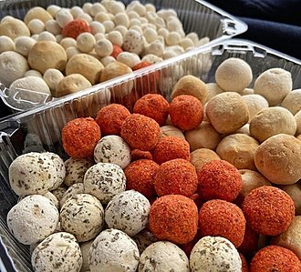
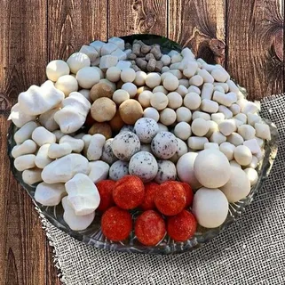
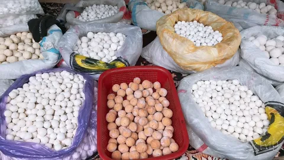

jhfw
ҚұртҚұрт — қазақ халқының сүттен жасалған ұлттық тағам ретінде кеңінен қолданатын өте көне түрінің бірі. Тағамның өте көне әрі пайдалы түрі – сиыр сүтінен жасалған құрт жайында мәлімет жинағым келді.
Қазақ халқы ұлттық тағамға өте бай. Құрт – сүттен жасалған ұлттық тағам. Құрт – сөзінің мағынасы да құрғатылған, кептірілген сүт деген мағынаны береді Құрт - малдың сүтінен дайындалатын, ұзақ уақыт сақтауға арналған тағам.
Ал сол сүттен жасалынатын құрттың өзі жасалу жолына қарай сан түрге бөлінеді. Осы орайда құрттан істелетін немесе кұрт қосылатын тағамдардың кейбір түрлерін айта кету қажет деп таптым. Мәселен құрт: 1) Жас құрт 2) Көбік құрт 3) Ыстық құрт 4) Сықпа құрт, немесе сүзбе құрт 5) Малта құрт 6) Езген құрт 7) Ақ малта 8)Ұнтақ құрт 9) Ақ құрт 10) Қара құрт 11)Құрт май
  jhfw
Құрттың дайындау түріҚұртты дайындаудың бiрнеше түрi бар.
Құрт. Сабада жиналып пісілген іркітті майы алынғаннан кейін түбіне май жаққан үлкен қазанға құйып қайната береді. Құрт қайнап жатқан кезде оның түбі күйіп кетпес үшін арнаулы құрт былғауышпен (басында кырғыш темірі болады) әлсін-әлсін қазанның түбін, ернеуін қырып араластырып отырады. Әбден қойылған құртты қапқа құйып керегеге асып қояды, сонда оның қалған суы тағы да ағып, құрғайды. Бұдан кейін қолмен бөлшектеп, тақшаға, шиге, колмен сықпалап өреге жайып кептіреді. Көгермей, қызбай біртегіс кебу үшін өреде жатқан кезде оны бірнеше рет аударыстырады. Осындан әдіспен қайнатып, кептіріп алған құрт жыл бойына, кейде 2—3 жылға дейін сақтала береді. Құрт күшті ас, ол әртүрлі тамаққа қосылады. Құрттан істелетін немесе құрт қосылатын тағамдардың кейбір түрлерін айта кету қажет.
jhfw
Құрт жасау технологиясыҚұрт – сиыр сүтінен жасалған ұлттық тағам. Пісіліп майы алынған айранды қайнатып кенеп дорбада сүзіп алып тұздап өреде кептіріп сақтайтын тағам түрі. Жасалу тәсілдеріне қарай құрт сықпа құрт, ақ құрт, қара құрт, майлы құрт деген түрлерге бөлінеді.
Сиырды сауып алған соң, сүтті жылы күйінде сүт машинасына құйып тартады. Сүттің қаймағы алынады да, қаймақтан бөлінген сүтті көк сүт деп атайды. Оны ағаш бөшкеге құйып жинай береді. Көк сүт құйылған ағаш бөшке күн шуағы мол түсетін күнгей бетке қойылады. Бөшкенің бір бүйірін дөңгелете кесіп, тесік жасайды да, сол тесікті бекітіп тұратын ағаш тықпа жасайды. Тартылған көк сүтті ағаш бөшкеге құйып, аузын мықтап бекітеді. Ол кешке дейін күн көзіне пісіп, ақырып тұрады. Сары суы бөлініп, іркіті бетіне шығып быжиды. Міне, сол кезде бөшкенің бүйіріндегі тесікті ашып, сары суын ағызады. Іркіт ішінде қалады. Бұл әдіс күнде қайталанады. Ағаш бөшке ашыған іркітке толған уақытта іркіт дайын болды дегенді білдіреді. Енді іркітті түбіне май жаққан үлкен қазанға құйып қайната береді. Құрт қайнап жатқан кезде оның түбі күйіп кетпес үшін арнаулы құрт былғауышпен (басында кырғыш темірі болады) әлсін-әлсін қазанның түбін, ернеуін қырып араластырып отырады. Әбден қойылған құртты қапқа құйып керегеге асып қояды, сонда оның қалған суы тағы да ағып, құрғайды. Бұдан кейін қолмен бөлшектеп, тақшаға, шиге, қолмен сықпалап өреге жайып кептіреді. Көгермей, кызбай біртегіс кебу үшін өреде жатқан кезде оны бірнеше рет аударыстырады. Осындан әдіспен қайнатып, кептіріп алған құрт жыл бойына, кейде 2—3 жылға дейін сақтала береді. Құрт күшті ас, ол әр түрлі тамаққа қосылады. Құрт аса ыстықты қажет ететін тағам. Күн көзі дұрыс түспейтін, қоңыржай аймақтарда құрт жасау нәтижелі іс бермейді. Себебі Күн көзінен алынған қуатты энергия құрттың бойына табиғи дәруменді сіңіреді. Әрі құрттың көгермей, шірімей кебуіне де аса қуатты күн көзі ғана пайдасын бермек. Осындай әдіспен қайнатып, кептіріп алған құрттың 2 немесе 3 жылға дейін азбай сақталуының сыры осында. Құрттың қай түрі болса да өреге кептіріледі. Қайнатқан құрттың өзі үш түрлі болады: бірі – ақ құрт. Ол көп ашымаған майдан әбден арылған іркіттен қайнатылады. Ақ құрт аталатын себебі, тұзын көбірек етіп қосады. Ол көбіне жазда, күзде желінеді. Екінші - қара құрт. Ашуы жеткен іркітке аздап сары май қосып қайнатады. Тұзын аздап қана қосады. Құрттың осы түрін қыста езіп, дәмді құрт көже даярлайды. Үшінші – ежігей құрт. Ежігей де құрттың жасалу жолымен әзірленеді. Бірақ ол өте ашымаған іркіттен жасалады. Әзірлеу кезінде бір шелек іркітке екі шелек қаймағы алынбаған сүт қосып қайнатылып дайындалады. Әбден қайнап суы сарқылып піскен ежегей суы сорғытылып сәл кебір тартқаннан кейін алақанға салып сығып өреге қатарлап жәйіп кептіріп алады. Ежігей кепкен кезде де ащы құрт сяқты тас болып қатып қалмайды. Үгітіліп тұрады. Әбден кептірген ежегей жазда да, қыста да дәмі де, түсі де өзгермейді. Ежігейді кептірмей де пайдалануға болады. Үстіне сары май, қаймақ құйып, қонақтарға ұсынады. Сондықтан да оны дастарқанға салуға даяр тұру үшін ыдыста екі ـүш күн сақтап қойса да бұзылмай сақтала береді. Кұрт күшті ас, ол әр түрлі тамаққа қосылады.